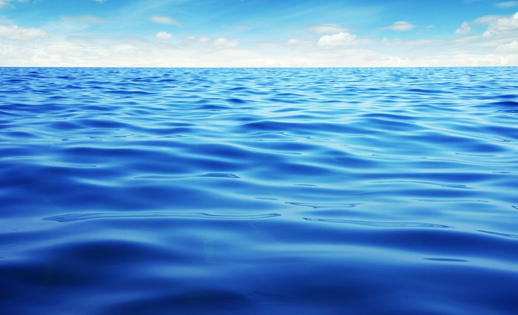

Skrivnosti Globokega Morja

Naredili: Aleksander, Urh, Vida in Bert
Morje ima nedvomno največ skrivnosti v naši galaksiji, večina še neodkritih...
Kmalu boste izvedeli veliko bolj stvari o morjih in njihovih zanimivostvih, skrivnostih, njihove pomembnosti in celo kviz na koncu!
Aleksander
Vida
Urh
Bert